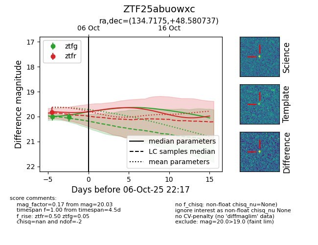
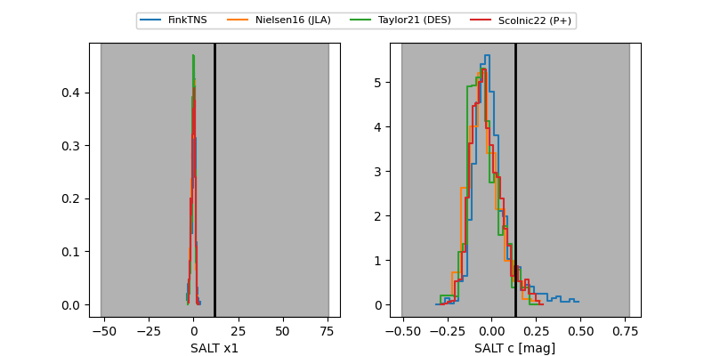

FINK: ZTF25abuowxc
Lasair: ZTF25abuowxc
ALeRCE: ZTF25abuowxc
ZTF25abuowxc (ztf,fink)
equatorial (ra, dec) = (134.7175,+48.58074)
galactic (l, b) = (170.8067,+40.74599)


last ztfg=20.03, ztfr=19.82
2 ztfg, 1 ztfr detections